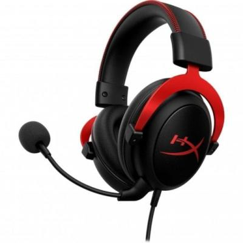

<div id="container-auriculares">

    <div class="container my-5">
    <div class="card shadow-lg border-0">
      <div class="card-body p-5">

        <h1 class="mb-4 text-primary">Auriculares Gaming - Especificaciones</h1>

        <div class="row align-items-center">
          <!-- Columna del texto -->
          <div class="col-md-8">
            <p class="lead">
              Auriculares con sonido envolvente digital Virtual 7.1, diseño circumaural, micrófono unidireccional con cancelación de ruido y compatibilidad multiplataforma (PC, consolas y móviles).
            </p>

            <a href="https://www.pccomponentes.com/hyperx-cloud-ii-auriculares-gaming-71-rojos" target="_blank">PCcomponentes</a>
          </div>

          <!-- Columna de la imagen -->
          <div class="col-md-4 text-center">
            
          </div>
        </div>

        <hr>

        <h3 class="mt-4 text-secondary">Especificaciones</h3>

        <div class="accordion" id="specsAccordion">

          <!-- Desempeño -->
          <div class="accordion-item">
            <h2 class="accordion-header" id="headingPerf">
              <button class="accordion-button" type="button" data-bs-toggle="collapse" data-bs-target="#collapsePerf" aria-expanded="true">
                Desempeño
              </button>
            </h2>
            <div id="collapsePerf" class="accordion-collapse collapse show" data-bs-parent="#specsAccordion">
              <div class="accordion-body">
                <ul>
                  <li>Tipo de producto: Auriculares</li>
                  <li>Estilo de uso: Diadema</li>
                  <li>Uso recomendado: Juego</li>
                  <li>Tipo de auricular: Binaural</li>
                  <li>Color del producto: Negro, Rojo</li>
                  <li>Longitud de cable: 1 m</li>
                  <li>Virtual Surround: Sí</li>
                  <li>Tecnología de sonido envolvente digital: Virtual 7.1 surround sound</li>
                  <li>Productos compatibles: PC, PS5, PS4, Xbox Series X|S, Xbox One, Nintendo Switch, Mobile</li>
                </ul>
              </div>
            </div>
          </div>

          <!-- Puertos e Interfaces -->
          <div class="accordion-item">
            <h2 class="accordion-header" id="headingPorts">
              <button class="accordion-button collapsed" type="button" data-bs-toggle="collapse" data-bs-target="#collapsePorts">
                Puertos e Interfaces
              </button>
            </h2>
            <div id="collapsePorts" class="accordion-collapse collapse" data-bs-parent="#specsAccordion">
              <div class="accordion-body">
                <ul>
                  <li>Tecnología de conectividad: Alámbrico</li>
                  <li>Conector de 3,5 mm: Sí</li>
                  <li>Conexión USB: Sí</li>
                </ul>
              </div>
            </div>
          </div>

          <!-- Auriculares -->
          <div class="accordion-item">
            <h2 class="accordion-header" id="headingHeadphones">
              <button class="accordion-button collapsed" type="button" data-bs-toggle="collapse" data-bs-target="#collapseHeadphones">
                Auriculares
              </button>
            </h2>
            <div id="collapseHeadphones" class="accordion-collapse collapse" data-bs-parent="#specsAccordion">
              <div class="accordion-body">
                <ul>
                  <li>Audífonos: Circumaural</li>
                  <li>Frecuencia de auricular: 10 - 23000 Hz</li>
                  <li>Obstrucción: 60 Ohm</li>
                  <li>Sensibilidad de auricular: 98 dB</li>
                  <li>Tipo de imán: Neodimio</li>
                  <li>Unidad de disco: 5,3 cm</li>
                  <li>Tipo de controlador: Dinámico</li>
                  <li>THD, distorsión armónica total: 2%</li>
                </ul>
              </div>
            </div>
          </div>

          <!-- Micrófono -->
          <div class="accordion-item">
            <h2 class="accordion-header" id="headingMic">
              <button class="accordion-button collapsed" type="button" data-bs-toggle="collapse" data-bs-target="#collapseMic">
                Micrófono
              </button>
            </h2>
            <div id="collapseMic" class="accordion-collapse collapse" data-bs-parent="#specsAccordion">
              <div class="accordion-body">
                <ul>
                  <li>Tipo de micrófono: Boom</li>
                  <li>Sensibilidad de micrófono: -42 dB</li>
                  <li>Efecto de cancelación de ruido: Sí</li>
                  <li>Tipo de dirección de micrófono: Unidireccional</li>
                </ul>
              </div>
            </div>
          </div>

          <!-- Peso y dimensiones -->
          <div class="accordion-item">
            <h2 class="accordion-header" id="headingWeight">
              <button class="accordion-button collapsed" type="button" data-bs-toggle="collapse" data-bs-target="#collapseWeight">
                Peso y dimensiones
              </button>
            </h2>
            <div id="collapseWeight" class="accordion-collapse collapse" data-bs-parent="#specsAccordion">
              <div class="accordion-body">
                <ul>
                  <li>Peso: 320 g</li>
                </ul>
              </div>
            </div>
          </div>

        </div>

      </div>
    </div>
  </div>

</div>